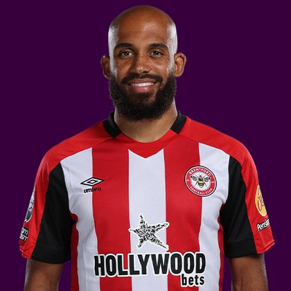

PITCHKEEP
Premier League ranks
Player File · MID MUN · Premier #11

Bryan Mbeumo
MID · Man Utd · age 27 · £8.0m
2025/26 Premier League
| Year | Starts | Min | G | A | xG | xA | CS | GC | Bonus | YC | Sleeper | FPL |
|---|---|---|---|---|---|---|---|---|---|---|---|---|
| 2025/26 | 31 | 2611 | 11 | 3 | 11.98 | 4.99 | 8 | 37 | 16 | 4 | 151.2 | 148 |
Plus
- Consensus 20.55, Hub 7, Fix 6, xGI 5. The industry still has him as a top-eight mid.
- 11 G, 3 A, 16.97 xGI. The underlying likes him more than the finishing.
- United, £8.0m. Template-adjacent without being Haaland-adjacent.
- The Premier 11th overall - hybrid of Sleeper BPL and the published pro lists.
- 151.2 Sleeper BPL 2025 points (Pitch #63).
Minus
- Sleeper 63. The Pitch already left him behind Garner, Wilson, and a pile of defenders.
- 11 on 11.98 xG is slightly cold, not a 15-goal season in disguise.
- Premier 30 is the hybrid refusing to pay 2024 Mbeumo prices for 2025 Mbeumo output.
- Board spread 4-63 (The Independent Watchlist to Sleeper BPL 2025).
PitchKeep Take · The Premier
Bryan Mbeumo is the other side of the Semenyo coin. Consensus still loves him (20.55, several expert lists inside the top eight). Sleeper BPL 2025 had him 63rd (151.2) on 11 goals and 3 assists. Hybrid 30. The Premier is not going to rank him like a 1.05 because the public remembers Brentford Mbeumo, and it is not going to rank him 63rd because 16.97 xGI and first-ish United usage still matter.
£8.0m is a lot of people still pressing the old button. xGI fifth, Sleeper 63rd. That is a sell-the-name, buy-the-gap-the-other-direction situation. If your league is Sleeper, he is a reach at expert ADP. If your league is FPL, he is a hold at 8.0 with a shot at bouncing. The third list is the average of those two sentences.
Instruction: do not pay Semenyo money. Do not throw him in a dump pile with true mid-60s Sleeper names who have no xGI. He is Premier 30. That is a third-round name, not a first, not a waiver.
Bryan Mbeumo is a midfielder for Man Utd, age 27, £8.0m. The Premier ranks him 11th overall by splitting Sleeper BPL 2025 (#63, 151.2 points) with the consensus of 10 other boards (14.0). The industry still has him 49 spots ahead of the 2025/26 Sleeper count. The Premier pays that reputation something, not everything. Brand does not outrun a down year, and a down year does not erase a player Man Utd still builds around.
The 2025/26 Premier League line is 31 starts and 2611 minutes, 11 goals and 3 assists, 25 tackles and 23 CBI. Official FPL scored it at 148 points (4.5 per match) with 16 bonus. Sleeper's table turned the same counting stats into 151.2. Midfielders get 9 a goal, 6 an assist, and 1 a clean sheet, plus a full tackle/CBI stream. That is why a six who plays every week can outrank a ten-goal winger who sits.
Sleeper vs FPL
Same 2025/26 line, two scoring tables
Board graph
Spread 4-63 · 17 sources
Tape · 2025/26 Premier League
Bryan MBEUMO 2026 | All Goals for Manchester United | Highlights
Every Board
Spread 4-63 · 17 sources
| Source | Rank |
|---|---|
| The Independent Watchlist | 4 |
| FPL xGI | 5 |
| RotoWire GW1 | 5 |
| FPL Ownership | 6 |
| Fantasy Football Fix Elite | 6 |
| Fantasy Football Hub | 6 |
| Premier League Scout Selection | 8 |
| FPL ICT Index | 9 |
| RotoWire FPL 400 | 9 |
| FPL Price Board | 10 |
| RotoWire Fantrax / Sleeper 400 | 14 |
| Premier League Scout Key Prices | 15 |
| FPL EP Next | 16 |
| FPL 2025/26 Points | 30 |
| The Athletic PL 50 | 36 |
| ESPN PL 50 | 37 |
| Sleeper BPL 2025 | 63 |
PK News
- Most expensive Premier League transfers so far in the 2026-2027 Transfer Window & the EPL table via transfer spend
- Every Premier League transfer this summer as window deadline passes and Guehi to Liverpool suffers late collapse
- Transfer deadline day deals summer 2026 - confirmed moves across Premier League, Championship, EFL, Europe and more
- Nottingham Forest eyeing Premier League record sale for Elliot Anderson ahead of formal Manchester City talks
- What time does the transfer window shut tonight? Deadline day details amid major Premier League spending spree
All players · The Premier · The Pitch · PK News · Calculator